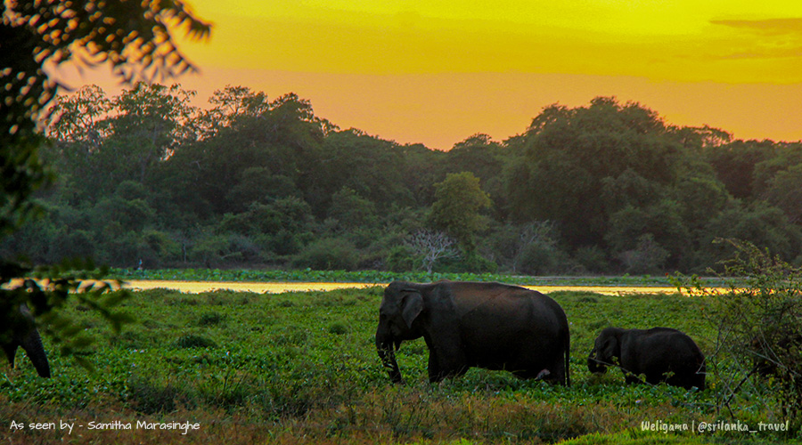

Animals in Sri Lanka
Sri Lanka is home to about 21 species of endemic mammals, 26 species of birds, 113 species of reptiles, 112 species of amphibians, 50 species of fish and numerous insect species including 24 species of endemic butterflies such as Mycalesis rama and Elymnias singhala. Some of the common endemic animals that can be observed are:

Sri Lankan Junglefowl
Wild chickenlike bird. Male is burnt orange with dark streaks, cockerel-like glossy black tail, and a prominent red comb marked with yellow on the crown. Gray-brown female has white streaks and prominent barring on its wings. Terrestrial, found in pairs or small groups in forests of lowlands and highlands over much of Sri Lanka. Generally keeps to cover. Only confusion is with domestic chicken; note lack of white at tail base, and yellow marking on comb of males, and bars in wings of females in Sri Lanka Junglefowl.
Purple-faced langur
The Purple-faced, also known as the Purple-faced leaf monkey, is a long-tailed arboreal monkey endemic to Sri Lanka. This folivorous species normally has a social system consisting of one resident adult male (Harem), 1-7 adult females and a varying amount of juveniles and infants. All male groups (bachelor) also exist, numbering from 2-14 individuals.

Sri Lanka blue magpie
A large, long-tailed blue bird with a white-tipped tail, and chestnut hood and wings. Inhabits humid forest from lowlands to hills, where it often accompanies mixed canopy flocks, either singly or in small groups. There are no other large, long-tailed blue birds in its range. A noisy species. Sounds typically a series of high-pitched, piercing “clink” calls, as well as some rasping “krak” notes often given in a sequence.
Sri Lankan National Parks:
Yala national park
Wilpattu national park